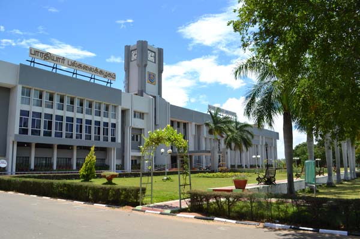

Bharathiar University of Colleges

Bharathiar University is a public state university in Coimbatore, Tamil Nadu, India. Named after Tamil poet Subramania Bharati, the university was established in February 1982 under the provision of Bharathiar University Act, 1981 (Act 1 of 1982) and was recognized by the University Grants Commission (UGC) in 1985.
Bharathiar University celebrated its silver jubilee celebrations on 24 February 2007. The president of India, A. P. J. Abdul Kalam, and the chief minister of Tamil Nadu, Karunanidhi, were chief guests.[1] Bharathiar University provides graduate, masters, M.Phil. and Ph.D. programs in various subjects. The university is known for its stringent Phd evaluation guidelines.[2].
PG ADMISSION
-
ADMISSION
The candidates should submit separate applications for the programs they are interested to get admission. Registration fee of Rs.400/- for each application should be paid through Net Banking/Debit/Credit cards/ NEFT. Registration for SC/ST candidates is Rs.200/- for each application ( Photo copy of the Community certificate be enclosed) The Online application form shall be completed in all aspects.
UG ADMISSION
-
ADMISSION
he candidates should submit separate applications for the programs they are interested to get admission. Registration fee of Rs.400/- for each application should be paid through Net Banking/Debit/Credit cards/ NEFT. Registration for SC/ST candidates is Rs.200/- for each application ( Photo copy of the Community certificate be enclosed) The Online application form shall be completed in all aspects.